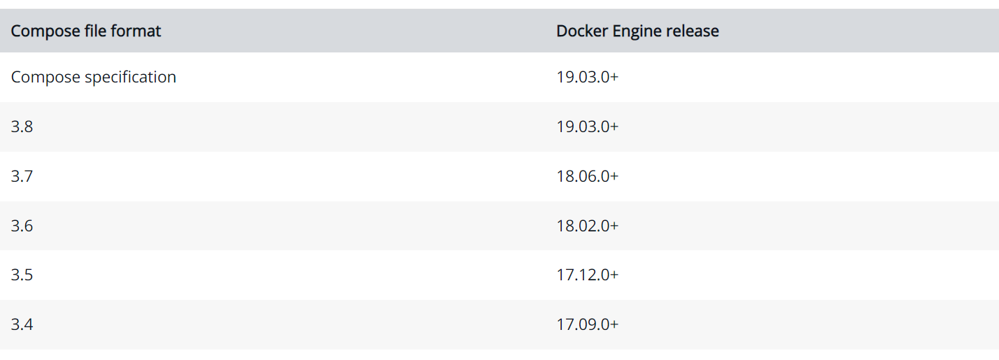
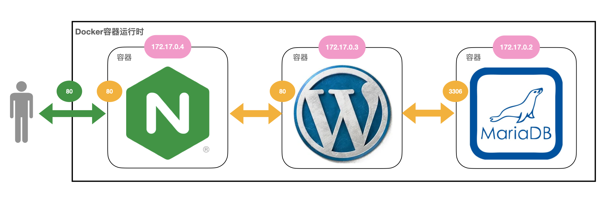

docker-compose：单机环境下的容器编排工具
什么是docker-compose
还是让我们从Docker诞生那会讲起。
在Docker把容器技术大众化之后，Docker周边涌现出了数不胜数的扩展、增强产品，其中有一个名字叫“Fig”的小项目格外令人瞩目。
Fig为Docker引入了“容器编排”的概念，使用YAML来定义容器的启动参数、先后顺序和依赖关系，让用户不再有Docker冗长命令行的烦恼，第一次见识到了“声明式”的威力。
Docker公司也很快意识到了Fig这个小工具的价值，于是就在2014年7月把它买了下来，集成进Docker内部，然后改名成了“docker-compose”。
从这段简短的历史中你可以看到，虽然docker-compose也是容器编排技术，也使用YAML，但它的基因与Kubernetes完全不同，走的是Docker的技术路线，所以在设计理念和使用方法上有差异就不足为怪了。
docker-compose自身的定位是管理和运行多个Docker容器的工具，很显然，它没有Kubernetes那么“宏伟”的目标，只是用来方便用户使用Docker而已，所以学习难度比较低，上手容易，很多概念都是与Docker命令一一对应的。
但这有时候也会给我们带来困扰，毕竟docker-compose和Kubernetes同属容器编排领域，用法不一致就容易导致认知冲突、混乱。考虑到这一点，我们在学习docker-compose的时候就要把握一个“度”，够用就行，不要太过深究，否则会对Kubernetes的学习造成一些不良影响。
Docker-compose.yml 文件详解：
官方文档：https://docs.docker.com/compose/compose-file/
Docker Compose 允许用户通过 docker-compose.yml 文件（YAML 格式）来定义一组相关联的容器为一个工程（project）。一个工程包含多个服务（service），每个服务中定义了创建容器时所需的镜像、参数、依赖等。
Docker Compose 模板文件我们需要关注的顶级配置有 version、services、networks、volumes 几个部分：
version：描述 Compose 文件的版本信息，当前最新版本为3.8，对应的 Docker 版本为19.03.0+services：定义服务，可以多个，每个服务中定义了创建容器时所需的镜像、参数、依赖等；networkds：定义网络，可以多个，根据 DNS server 让相同网络中的容器可以直接通过容器名称进行通信；volumes：数据卷，用于实现目录挂载。
示例文件
# cat docker-compose.yml
# 描述 Compose 文件的版本信息
version: "3.8"
#定义服务
services:
#当前容器的服务名
nginx-server:
#镜像名称
image: nginx:1.22.0-alpine
#容器名称，默认为"工程名称_服务条目名称_序号"
container_name: nginx-web1
#声明端口映射
expose:
- 80
- 443
#定义端口映射
ports:
# 左边宿主机端口:右边容器端口
- "80:80"
- "443:443"
# 配置容器连接的网络，引用顶级 networks 下的条目
networks:
- nginx-net
使用 docker-compose up 创建并启动所有服务
# 前台启动
docker-compose up
# 后台启动
docker-compose up -d
# 停止并删除容器、网络
docker-compose down
version
描述 Compose 文件的版本信息，当前最新版本为 3.8，对应的 Docker 版本为 19.03.0+。关于每个版本的详细信息请参考：https://docs.docker.com/compose/compose-file/compose-versioning/ 以下为 Compose 文件的版本信息所对应的 Docker 版本。

services
services 用来定义服务，可以多个，每个服务中定义了创建容器时所需的镜像、参数、依赖等，就像将命令行参数传递给 docker run 一样。同样，网络和数据卷的定义也是一样的。
比如，之前我们通过 docker run 命令构建一个 MySQL 应用容器的命令如下：
docker run -d --name mysql8 -p 3306:3306 -v /mydata/docker_mysql/conf:/etc/mysql/conf.d -v /mydata/docker_mysql/data:/var/lib/mysql -e MYSQL_ROOT_PASSWORD=1234 mysql:8
使用 docker-compose.yml 可以这样定义：
# 描述 Compose 文件的版本信息
version: "3.8"
# 定义服务，可以多个
services:
mysql: # 服务名称
image: mysql:8 # 创建容器时所需的镜像
container_name: mysql8 # 容器名称，默认为"工程名称_服务条目名称_序号"
ports: # 宿主机与容器的端口映射关系
- "3306:3306" # 左边宿主机端口:右边容器端口
environment: # 创建容器时所需的环境变量
MYSQL_ROOT_PASSWORD: 1234
volumes:
- "/mydata/docker_mysql/conf:/etc/mysql/conf.d"
- "/mydata/docker_mysql/data:/var/lib/mysql"
然后通过 dokcer-compose 相关命令即可完成容器的创建，停止或删除等一系列操作。
image
指定创建容器时所需的镜像名称标签或者镜像 ID。如果镜像在本地不存在，会去远程拉取。
build
除了可以基于指定的镜像构建容器，还可以基于 Dockerfile 文件构建，在使用 up 命令时会执行构建任务
通过 build 配置项可以指定 Dockerfile 所在文件夹的路径。Compose 将会利用 Dockerfile 自动构建镜像，然后使用镜像启动服务容器
build 配置项可以使用绝对路径，也可以使用相对路径
# 绝对路径，在该路径下基于名称为 Dockerfile 的文件构建镜像
/usr/local/docker-centos
# 相对路径，相对当前 docker-compose.yml 文件所在目录，基于名称为 Dockerfile 的文件构建镜像
container_name
Compose 创建的容器默认生成的名称格式为：工程名称_服务条目名称_序号。如果要使用自定义名称，使用 container_name 声明
services:
mycentos:
build: .
container_name: mycentos7 # 容器名称，默认为"工程名称_服务条目名称_序号"
因为 Docker 容器名称必须是唯一的，所以如果指定了自定义名称，就不能将服务扩展至多个容器。这样做可能会导致错误
序号是干什么用的呢？
docker-compose.yml 文件内容如下
# 描述 Compose 文件的版本信息
version: "3.8"
# 定义服务，可以多个
services:
testseq: # 服务名称
image: centos:7
然后通过 --scale 指定 testseq 服务一次性启动 3 个
docker-compose up -d --scale testseq=3
可以看到有 3 个容器被创建，容器名称最后的序号是从 1 开始累加的，这就是序号的作用。所以如果指定了自定义名称，就不能将服务扩展至多个容器。
depends_on
使用 Compose 最大的好处就是敲最少的命令做更多的事情，但一般项目容器启动的顺序是有要求的，如果直接从上到下启动容器，必然会因为容器依赖问题而启动失败。例如在没有启动数据库容器的情况下启动了 Web 应用容器，应用容器会因为找不到数据库而退出。depends_on 就是用来解决容器依赖、启动先后问题的配置项
version: "3.8"
services:
web:
build: .
depends_on:
- db
- redis
redis:
image: redis
db:
image: mysql
上述 YAML 文件定义的容器会先启动 db 和 redis 两个服务，最后才启动 web 服务。
port
容器对外暴露的端口，格式：左边宿主机端口:右边容器端口
ports:
- "80:80"
- "8080:8080"
expose
容器暴露的端口不映射到宿主机，只允许能被连接的服务访问
expose:
- "80"
- "8080"
restart
容器重启策略，简单的理解就是 Docker 重启以后容器要不要一起启动：
no：默认的重启策略，在任何情况下都不会重启容器；on-failure：容器非正常退出时，比如退出状态为非0(异常退出)，才会重启容器；always：容器总是重新启动，即使容器被手动停止了，当 Docker 重启时容器也还是会一起启动；unless-stopped：容器总是重新启动，除非容器被停止（手动或其他方式），那么 Docker 重启时容器则不会启动
services:
nginx:
image: nginx
container_name: mynginx
ports:
- "80:80"
restart: always
environment
添加环境变量。可以使用数组也可以使用字典。布尔相关的值（true、false、yes、no）都需要用引号括起来，以确保 YML 解析器不会将它们转换为真或假
environment:
RACK_ENV: development
SHOW: 'true'
SESSION_SECRET:
或者以下格式：
environment:
- RACK_ENV=development
- SHOW=true
- SESSION_SECRET
env_file
从文件中获取环境变量，可以指定一个或多个文件，其优先级低于 environment 指定的环境变量
env_file:
- /opt/runtime_opts.env # 绝对路径
- ./common.env # 相对路径，相对当前 docker-compose.yml 文件所在目录
- ./apps/web.env # 相对路径，相对当前 docker-compose.yml 文件所在目录
注意：env 文件中的每一行需采用 键=值 格式。以 # 开头的行会被视为注释并被忽略。空行也会被忽略。
command
覆盖容器启动后默认执行的命令
command: echo "helloworld"
该命令也可以是一个列表
command: ["echo", "helloworld"]
volumes
数据卷，用于实现目录挂载，支持指定目录挂载、匿名挂载、具名挂载。
- 指定目录挂载的格式为：
左边宿主机目录:右边容器目录，或者左边宿主机目录:右边容器目录:读写权限； - 匿名挂载格式为：
容器目录即可，或者容器目录即可:读写权限； - 具名挂载格式为：
数据卷条目名称:容器目录，或者数据卷条目名称:容器目录:读写权限。
# 描述 Compose 文件的版本信息
version: "3.8"
# 定义服务，可以多个
services:
mysql: # 服务名称
image: mysql:8 # 创建容器时所需的镜像
container_name: mysql8 # 容器名称，默认为"工程名称_服务条目名称_序号"
ports: # 宿主机与容器的端口映射关系
- "3306:3306" # 左边宿主机端口:右边容器端口
environment: # 创建容器时所需的环境变量
MYSQL_ROOT_PASSWORD: 1234
volumes:
# 绝对路径
- "/mnt/docker/docker_mysql/data:/var/lib/mysql"
# 相对路径，相对当前 docker-compose.yml 文件所在目录
- “./conf:/etc/mysql/conf.d“
# 匿名挂载，匿名挂载只需要写容器目录即可，容器外对应的目录会在 /var/lib/docker/volume 中生成
- "/var/lib/mysql"
# 具名挂载，就是给数据卷起了个名字，容器外对应的目录会在 /var/lib/docker/volume 中生成
- "mysql-data-volume:/var/lib/mysql"
# 定义数据卷，可以多个
volumes:
mysql-data-volume: # 一个具体数据卷的条目名称
name: mysql-data-volume # 数据卷名称，默认为"工程名称_数据卷条目名称"
network_mode
设置网络模式，类似 docker run 时添加的参数 --net host 或者 --network host 的用法
network_mode: "bridge"
network_mode: "host"
network_mode: "none"
network_mode: "service:[service name]"
network_mode: "container:[container name/id]"
networks
配置容器连接的网络，引用顶级 networks 下的条目。如果不声明网络，每个工程默认会创建一个网络名称为"工程名称_default"的 bridge 网络。
# 定义服务，可以多个
services:
nginx: # 服务名称
networks: # 配置容器连接的网络，引用顶级 networks 下的条目
- nginx-net # 一个具体网络的条目名称
# 定义网络，可以多个。如果不声明，默认会创建一个网络名称为"工程名称_default"的 bridge 网络
networks:
nginx-net: # 一个具体网络的条目名称
name: nginx-net # 网络名称，默认为"工程名称_网络条目名称"
driver: bridge # 网络模式，默认为 bridge
aliases
网络上此服务的别名。 同一网络上的其他容器可以使用服务名或此别名连接到服务容器。 同一服务在不同的网络上可以具有不同的别名
services:
nginx: # 服务名称
networks: # 配置容器连接的网络，引用顶级 networks 下的条目
nginx-net: # 一个具体网络的条目名称
aliases: # 服务别名，可以多个
- nginx1 # 同一网络上的其他容器可以使用服务名或此别名连接到服务容器
# 定义网络，可以多个。如果不声明，默认会创建一个网络名称为"工程名称_default"的 bridge 网络
networks:
nginx-net: # 一个具体网络的条目名称
name: nginx-net # 网络名称，默认为"工程名称_网络条目名称"
driver: bridge # 网络模式，默认为 bridge
Docker-compose 命令介绍：
官方文档：https://docs.docker.com/compose/reference/overview/
docker-compose [-f <arg>...] [options] [COMMAND] [ARGS...]
root@docker-server2:~# docker-compose --help
Options:
-f, --file FILE #指定compsoe 文件，默认为docker-compose.yml
-p, --project-name NAME #指定功能名称，默认为当前所在的目录名
--profile NAME #指定一个服务名称，只执行docker-compose.yml中某些profile 匹配名称的容器
# docker-compose --profile frontend up -d
-c, --context NAME #指定Dockerfile的文件路径,也可以是链接到git仓库的url
--verbose #显示更多输出信息
--log-level LEVEL #定义日志级别，DEBUG, INFO, WARNING, ERROR, CRITICAL
--ansi (never|always|auto) #定义什么时候显示ANSI控制字符
--no-ansi #不显示ANSI字符，已废弃
-v, --version #显示docker-compose的版本信息
-H, --host HOST #连接到docker主机，默认为本机
--tls #启用tls
--tlscacert #tls ca私钥
--tlscert #tls ca公钥
--tlskey #服务私钥
--tlsverify #服务公钥
--skip-hostname-check #不对证书校验(跳过检查证书签发的主机名)
--env-file PATH #指定文件向容器添加环境变量
#命令选项，需要在docker-compose.yml文件目录执行，带#的不常用
#build #构建或重新构建服务、在修改Dockerfile后,可以通过docker-compose build重新构建镜像并重建服务
#bundle #从当前docker compose文件生成一个以当前目录为名称的从Compose文件生成一个分布式应用程序捆绑包(DAB)、已废弃
config -q #验证docker-compose.yml文件，没有错误不输出任何信息
#create #创建服务,但是容器不启动
down #停止并删除资源，默认会删除容器和网络
#events #从容器接收实时事件，可以指定json日志格式，如
# docker-compose events --json
#exec #基于service进入指定容器执行命令
# docker-compose ps --services
# docker exec -it nginx-web1 sh
help #显示帮助细信息
images #列出本地镜像
kill #强制终止运行中的容器
# docker-compose kill -s SIGKILL nginx-server #SIG是信号名的通用前缀，KILL是指让一个进程立即终止的动作,合并起来SIGKILL就是发送给一个进程使进程立即终止的信号。
logs #基于service查看容器的日志
# docker-compose logs --tail="10" -f nginx-server
#pause #暂停服务
# docker-compose ps --service
# docker-compose pause nginx-server
#port #基于service查看容器的端口绑定信息
# docker-compose port --protocol=tcp nginx-server 80
ps #列出容器信息
pull #拉取镜像
#push #上传镜像
#restart #重启服务
rm #删除已经停止的服务
#run #一次性运行容器,等于docker run --rm
scale #设置指定服务运行的容器个数
# docker-compose scale nginx-server=2 #动态伸缩每个service的副本数,不能指定容器名和端口映射
start #启动服务
# docker-compose start nginx-server
stop #停止服务
# docker-compose stop nginx-server
top #显示容器运行状态
# docker-compose top
unpause #取消暂定状态中的server
# docker-compose unpause nginx-server
up #创建并启动容器，通常配合-d参数在后台运行容器
# docker-compose up -d
version #显示docker-compose版本信息
Docker-compose 常用命令
# 拉取工程中所有服务依赖的镜像
docker-compose pull
# 拉取工程中 nginx 服务依赖的镜像
docker-compose pull nginx
# 前台启动
docker-compose up
# 后台启动
docker-compose up -d
# -f 指定使用的 Compose 模板文件，默认为 docker-compose.yml，可以多次指定，指定多个 yml
docker-compose -f docker-compose.yml up -d
# 输出日志，不同的服务输出使用不同的颜色来区分
docker-compose logs
# 跟踪日志输出
docker-compose logs -f
# 关闭颜色
docker-compose logs --no-color
# 列出工程中所有服务的容器
docker-compose ps
# 列出工程中指定服务的容器
docker-compose ps nginx
# 在工程中指定服务的容器上执行 echo "helloworld"
docker-compose run nginx echo "helloworld"
# 进入工程中指定服务的容器
docker-compose exec nginx bash
# 当一个服务拥有多个容器时，可通过 --index 参数进入到该服务下的任何容器
docker-compose exec --index=1 nginx bash
# 暂停工程中所有服务的容器
docker-compose pause
# 暂停工程中指定服务的容器
docker-compose pause nginx
# 恢复工程中所有服务的容器
docker-compose unpause
# 恢复工程中指定服务的容器
docker-compose unpause nginx
# 重启工程中所有服务的容器
docker-compose restart
# 重启工程中指定服务的容器
docker-compose restart nginx
# 启动工程中所有服务的容器
docker-compose start
# 启动工程中指定服务的容器
docker-compose start nginx
# 停止工程中所有服务的容器
docker-compose stop
# 停止工程中指定服务的容器
docker-compose stop nginx
# 通过发送 SIGKILL 信号停止工程中指定服务的容器
docker-compose kill nginx
# 删除所有（停止状态）服务的容器
docker-compose rm
# 先停止所有服务的容器，再删除所有服务的容器
docker-compose rm -s
# 不询问是否删除，直接删除
docker-compose rm -f
# 删除服务容器挂载的数据卷
docker-compose rm -v
# 删除工程中指定服务的容器
docker-compose rm -sv nginx
# 停止并删除工程中所有服务的容器、网络
docker-compose stop
# 停止并删除工程中所有服务的容器、网络、镜像
docker-compose down --rmi all
# 停止并删除工程中所有服务的容器、网络、数据卷
docker-compose down -v
# 打印所有服务的容器所对应的镜像
docker-compose images
# 打印指定服务的容器所对应的镜像
docker-compose images nginx
# 打印指定服务容器的某个端口所映射的宿主机端口
docker-compose port nginx 80
# 显示工程中所有服务的容器正在运行的进程
docker-compose top
# 显示工程中指定服务的容器正在运行的进程
docker-compose top nginx
如何使用docker-compose
docker-compose的安装非常简单，它在GitHub（ https://github.com/docker/compose））上提供了多种形式的二进制可执行文件，支持Windows、macOS、Linux等操作系统，也支持x86_64、arm64等硬件架构，可以直接下载。
在Linux上安装的Shell命令我放在这里了，用的是最新的2.6.1版本：
# intel x86_64sudo
curl -SL https://github.com/docker/compose/releases/download/v2.6.1/docker-compose-linux-x86_64 \ -o /usr/local/bin/docker-compose
# apple m1sudo
curl -SL https://github.com/docker/compose/releases/download/v2.6.1/docker-compose-linux-aarch64 \ -o /usr/local/bin/docker-compose
sudo chmod +x /usr/local/bin/docker-compose
sudo ln -s /usr/local/bin/docker-compose /usr/bin/docker-compose
安装完成之后，来看一下它的版本号，命令是 docker-compose version，用法和 docker version 是一样的：
docker-compose version
接下来，我们就要编写YAML文件，来管理Docker容器了，先用私有镜像仓库作为示范吧。
Docker-compose 项目是Docker官方的开源项目,负责实现对单机容器的快速编排,Docker-compose将所管理的容器分为三层，分别是工程(project)、服务(service)以及容器(container)。
- project：工程，默认当前目录名。
- service：服务，通过服务名称管理容器。
- container：容器
docker-compose 里管理容器的核心概念是“ service”。注意，它与Kubernetes里的 Service 虽然名字很像，但却是完全不同的东西。docker-compose里的“service”就是一个容器化的应用程序，通常是一个后台服务，用YAML定义这些容器的参数和相互之间的关系。
如果硬要和Kubernetes对比的话，和“service”最像的API对象应该算是Pod里的container了，同样是管理容器运行，但docker-compose的“service”又融合了一些Service、Deployment的特性。
下面的这个就是私有镜像仓库Registry的YAML文件，关键字段就是“ services”，对应的Docker命令我也列了出来：
docker run -d -p 5000:5000 registry
services:
registry:
image: registry
container_name: registry
restart: always
ports:
- 5000:5000
把它和Kubernetes对比一下，你会发现它和Pod定义非常像，“services”相当于Pod，而里面的“service”就相当于“spec.containers”：
apiVersion: v1
kind: Pod
metadata:
name: ngx-pod
spec:
restartPolicy: Always
containers:
- image: nginx:alpine
name: ngx
ports:
- containerPort: 80
比如用 image 声明镜像，用 ports 声明端口，很容易理解，只是在用法上有些不一样，像端口映射用的就还是Docker的语法。
由于docker-compose的字段定义在官网（https://docs.docker.com/compose/compose-file/）
上有详细的说明文档，我就不在这里费口舌解释了，你可以自行参考。
需要提醒的是，在docker-compose里，每个“service”都有一个自己的名字，它同时也是这个容器的唯一网络标识，有点类似Kubernetes里 Service 域名的作用。
好，现在我们就可以启动应用了，命令是 docker-compose up -d，同时还要用 -f 参数来指定YAML文件，和 kubectl apply 差不多：
docker-compose -f reg-compose.yml up -d
因为docker-compose在底层还是调用的Docker，所以它启动的容器用 docker ps 也能够看到：
不过，我们用 docker-compose ps 能够看到更多的信息：
docker-compose -f reg-compose.yml ps
想要停止应用，我们需要使用 docker-compose down 命令：
docker-compose -f reg-compose.yml down
通过这个小例子，我们就成功地把“命令式”的Docker操作，转换成了“声明式”的docker-compose操作，用法与Kubernetes十分接近，同时还没有Kubernetes那些昂贵的运行成本，在单机环境里可以说是最适合不过了。
使用docker-compose搭建WordPress网站
不过，私有镜像仓库Registry里只有一个容器，不能体现docker-compose容器编排的好处，我们再用它来搭建一次WordPress网站，深入感受一下。

第一步还是定义数据库MariaDB，环境变量的写法与Kubernetes的ConfigMap有点类似，但使用的字段是 environment，直接定义，不用再“绕一下”：
services:
mariadb:
image: mariadb:10
container_name: mariadb
restart: always
environment:
MARIADB_DATABASE: db
MARIADB_USER: wp
MARIADB_PASSWORD: 123
MARIADB_ROOT_PASSWORD: 123
我们可以再对比第7讲里启动MariaDB的Docker命令，可以发现docker-compose的YAML和命令行是非常像的，几乎可以直接照搬：
docker run -d --rm \
--env MARIADB_DATABASE=db \
--env MARIADB_USER=wp \
--env MARIADB_PASSWORD=123 \
--env MARIADB_ROOT_PASSWORD=123 \
mariadb:10
第二步是定义WordPress网站，它也使用 environment 来设置环境变量：
services:
...
wordpress:
image: wordpress:5
container_name: wordpress
restart: always
environment:
WORDPRESS_DB_HOST: mariadb #注意这里，数据库的网络标识
WORDPRESS_DB_USER: wp
WORDPRESS_DB_PASSWORD: 123
WORDPRESS_DB_NAME: db
depends_on:
- mariadb
不过，因为docker-compose会自动把MariaDB的名字用做网络标识，所以在连接数据库的时候（字段 WORDPRESS_DB_HOST）就不需要手动指定IP地址了，直接用“service”的名字 mariadb 就行了。这是docker-compose比Docker命令要方便的一个地方，和Kubernetes的域名机制很像。
WordPress定义里还有一个 值得注意的是字段 depends_on，它用来设置容器的依赖关系，指定容器启动的先后顺序，这在编排由多个容器组成的应用的时候是一个非常便利的特性。
第三步就是定义Nginx反向代理了，不过很可惜，docker-compose里没有ConfigMap、Secret这样的概念，要加载配置还是必须用外部文件，无法集成进YAML。
Nginx的配置文件和第7讲里也差不多，同样的，在 proxy_pass 指令里不需要写IP地址了，直接用WordPress的名字就行：
server {
listen 80;
default_type text/html;
location / {
proxy_http_version 1.1;
proxy_set_header Host $host;
proxy_pass http://wordpress; #注意这里，网站的网络标识
}
}
然后我们就可以在YAML里定义Nginx了，加载配置文件用的是 volumes 字段，和Kubernetes一样，但里面的语法却又是Docker的形式：
services:
...
nginx:
image: nginx:alpine
container_name: nginx
hostname: nginx
restart: always
ports:
- 80:80
volumes:
- ./wp.conf:/etc/nginx/conf.d/default.conf
depends_on:
- wordpress
到这里三个“service”就都定义好了，我们用 docker-compose up -d 启动网站，记得还是要用 -f 参数指定YAML文件：
docker-compose -f wp-compose.yml up -d
启动之后，用 docker-compose ps 来查看状态：
我们也可以用 docker-compose exec 来进入容器内部，验证一下这几个容器的网络标识是否工作正常：
docker-compose -f wp-compose.yml exec -it nginx sh
/ # ping mariadb
/ # ping worepress
/ # exit
我们分别ping了 mariadb 和 wordpress 这两个服务，网络都是通的，不过它的IP地址段用的是“172.22.0.0/16”，和Docker默认的“172.17.0.0/16”不一样。
再打开浏览器，输入本机的“127.0.0.1”或者是虚拟机的IP地址（我这里是“ http://192.168.10.208”），就又可以看到熟悉的WordPress界面了.